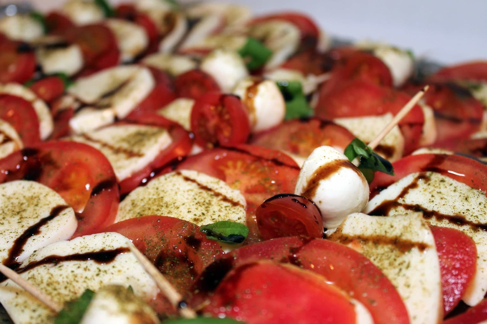

Peach and Tomato Caprese Salad

Description
This caprese salad with peaches, heirloom tomatoes, and fresh mozzarella is topped with a simple balsamic vinaigrette for a fantastic summer appetizer.
It takes 15 minutes to prepare and makes four servings.
Ingredients
- 2 tablespoons extra-virgin olive oil
- 1 tablespoon balsamic vinegar
- 1 teaspoon flaked salt, divided
- 2 large heirloom tomatoes, thinly sliced
- 2 ripe peaches - halved, pitted, and sliced into half moons
- 1 (8 ounce) ball fresh mozzarella, thinly sliced
- 6 leaves fresh basil
Steps
- Whisk together olive oil, balsamic vinegar, and 1 pinch flaked salt in a small bowl until dressing is smooth.
- Alternate tomato slices, peach slices, mozzarella slices, and basil leaves in layers on a serving platter. Drizzle dressing over salad and sprinkle remaining flaked salt on top.